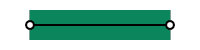

graphics commands¶
(global)
Background¶
- background(<color>)
Clears the current context with solid color, can also be used to set image backgrounds when combined with
context.push()
- background(cubeImage[, mipLevel = 0])
Clears the current background with the contents of a cube image, using the current camera settings to define eye direction
- Parameters:
cubeImage – The image to clear the background with
mipLevel – The mip level of the image to use, useful for displaying pre-blurred image mips, such as those calculated using
image.generateIrradiance()
- background(shader)
Clears the current background using a custom shader
Example
function setup() -- Create a custom background shader skybox = shader{ name = "Skybox", properties = { {"environment", "texture"}, {"mipLevel", "float", 0} }, pass = { cullFace = "none", -- backgrounds don't need culling depthWrite = false, -- no need to write to depth buffer depthFunc = "always", -- no need for depth testing blendMode = "disabled", -- no need for blending renderQueue = "background", -- render behind everything else vertex = [[ #version 430 #include <codea/common.glsl> layout (location = POSITION) in vec3 a_position; layout (location = 0) out vec3 v_eyeDirection; void main() { // vertex layout is a quad between -1 and 1, use this to unproject and calculate eye direction from view/perspective matrix vec3 unprojected = (u_invProj * vec4(a_position, 1)).xyz; v_eyeDirection = mat3(u_invView) * unprojected; gl_Position = vec4(a_position.xy, 1, 1); } ]], fragment = [[ #version 430 #include <codea/common.glsl> layout (location = 0) in vec3 v_eyeDirection; out vec4 fragColor; uniform samplerCube environment; uniform float mipLevel; void main() { vec3 rayDir = normalize(v_eyeDirection); rayDir = vec3(rayDir.x, rayDir.y, rayDir.z); vec3 col = texture(environment, rayDir, mipLevel).rgb; fragColor = vec4(col, 1.0); } ]], } } local hdr = image.cube(image.read(asset.builtin.hdr.Norway_Forest)) skybox.environment = hdr:generateIrradiance() -- Test mip level adjustment parameter.number("MipLevel", 0, 10, 0, function(mip) skybox.mipLevel = mip end) parameter.vec2("Rotation", vec2(0,0)) end function draw() matrix.perspective() local v = mat4.orbit(vec3(0, 0, 0), 1, Rotation:unpack()) matrix.view(v) background(skybox) end
Vector Graphics¶
A set of graphics functions which are so commonly used they are in the global namespace for convenience
- line(x1, y1, x2, y2)¶
Draws 2D line from the start point (x1, y1) to the end point (x2, y2) based on the current style:
Color with
style.stroke()Width with
style.strokeWidth()- End Caps with
style.lineCapMode() 
SQUARE
PROJECT
ROUND
- End Caps with
{kind=link}
- line(x, y)
Variation of line command used as part of shape drawing
- polyline(x1, y1, x2, y2, ... xn, yn)¶
Draws a continuous 2D line with an arbitrary number of points (x1, y1, etc…) based on the current style
Color with
style.stroke()Width with
style.strokeWidth()End Caps with
style.lineCap()- Line Joins with
style.lineJoin() 
ROUND
MITER
BEVEL
- Line Joins with
- polygon(x1, y1, x2, y2, ... xn, yn)¶
Draws a closed 2D polygon with an arbitrary number of points based on the current style
- bezier(x1, y1, cx1, cy1, cx2, cy2, x2, y2)¶
Draw a quadratic bezier curve using four points based on the current style
- bezier(cx1, cy1, cx2, cy2, x2, y2)
Variation of bezier command used as part of shape drawing
- arc(x, y, radius, startAngle, endAngle, dir)¶
Draws a 2D arc with a given origin, radius and start, end angles + direction
- Parameters:
x – x coordinate of the arc origin
y – y coordinate of the arc origin
radius – the radius arc
startAngle – the start angle of the arc (in degrees)
endAngle – the end angle of the arc (in degrees)
dir – the direction of the arc, 1 or clockwise, -1 for anti-clockwise
- ellipse(x, y, w, h)¶
- ellipse(x, y, r)
Draw an ellipse with a given origin point and width / height (or radius)
- rect(x, y, w, h)¶
- rect(x, y, w, h, r)
- rect(x, y, w, h, r1, r2, r3, r4)
Draws a rectangle with a given origin point and width / height, origin and sizing behaviour depends on
style.shapeMode()Additional arguments allow for rounded corners (either all one radius or four separate radii)
Sprites¶
- sprite(image, x, y[, w, h])¶
- sprite(asset.key, x, y[, w, h])
- sprite(sprite.slice, x, y[, w, h])
Draws a sprite using a an asset -
image,asset.keyorsprite.slice
- sprite(shader, x, y, w, h)
Text¶
- text(str, x, y[, w, h])
Draws one or more lines of text based on the current style. Use the optional width and height parameters to draw a fixed size text box with line wrapping enabled
Text Color with
style.fill()Text Outline with
style.stroke()Text Outline Thickness with
style.strokeWidth()- Text Alignment with
style.textAlign() LEFTCENTERRIGHTTOPMIDDLEBOTTOM
- Text Alignment with
- Text Style with
style.textStyle() TEXT_NORMALTEXT_BACKGROUNDTEXT_UNDERLINETEXT_OVERLINETEXT_STRIKE_THROUGHTEXT_BOLDTEXT_ITALICSTEXT_RICH
- Text Style with
The
TEXT_RICHstyle option enables rich text, which parses xml tags within the supplied string to format individual charactersBuilt-In Tags
Bold and Italic
The <i>quick brown fox</i> jumps over the <b>lazy dog</b>.
Custom Tags
Custom tags can assigned using a callback function -
text.style.myCustomTag = function(tag, format) ... endThe
tagparameter gives access to custom xml tag attributesThe
formatparameter gives access to text formatting options that can be adjusted per tag, derived from text styles in thestylemoduletextAligntextStylefontSizefontNamefillColorstrokeColorstrokeWidthtextShadowtextShadowOffsettextShadowSoftnercallback
The additional parameter
callbackis a special function used to modify individual glyphs (characters) when the text is rendered. The callback function has the following parameters:str- the string being drawnindex- the index of the current glyph in the stringmod- a reference to a glyphModifier object, used to modify the current glyph
A
glyphModifierhas the follwing properties:offsetX- the amount to offset the glyphs x position in pixelsoffsetY- the amount to offset the glyphs y position in pixelsalpha- the alpha of the current glyph (0-255)color- the color the of the current glyph
Example
function setup() text.style.wave = function(tag, format) local height = tag:number("height", 2) format.fillColor = color.red format.textStyle = format.textStyle | TEXT_ITALICS | TEXT_BOLD format.callback = function(str, i, mod) mod.offsetY = mod.offsetY + math.sin(time.elapsed*5 + i) * height end end text.style.shake = function(tag, format) local intensity = tag:number("intensity", 2) format.callback = function(str, i, mod) local r1 = (math.random() * 0.5 - 0.5) * intensity local r2 = (math.random() * 0.5 - 0.5) * intensity mod.offsetX = mod.offsetX + r1 mod.offsetY = mod.offsetY + r2 end end text.style.appear = function(tag, format) local t = timer * tag:number("speed", 5) format.callback = function(str, i, mod) local a = math.min(math.max(t - i, 0.0), 1.0) local len = str:len() mod.offsetY = 5 * math.cos(a * math.pi/2) mod.alpha = a * 255 end end parameter.text("str", "<appear speed='15'><b>This</b> line will appear and <shake intensity = '2'>shake</shake> and <wave height='5'>wave</wave> and might wrap at some point...</appear>") --parameter.text("str", "Here is a line of text that might wrap at some point...") parameter.integer("fontSize", 5, 100, 24) parameter.number("WaveHeight", 0, 10, 5) parameter.enumerated("TextAlignH", {"LEFT", "CENTER", "RIGHT"}, 2) parameter.enumerated("TextAlignV", {"BOTTOM", "MIDDLE", "TOP"}, 2) parameter.action("Reset", function() timer = 0 end) alignH = {LEFT, CENTER, RIGHT} alignV = {BOTTOM, MIDDLE, TOP} timer = 0 --[[ scn = scene.default3d() local rig = scn.camera:add(camera.rigs.orbit) rig.distance = 50 rig.angles.y = -45 rig.angles.y = -75 scene.main = scn--]] end function draw() local boxWidth = 400 local boxHeight = 200 background(128) --matrix.ortho() -- Setup the text drawing style style.font("Arial") style.fill(color.cyan).fontSize(fontSize) matrix.transform3d(WIDTH/2 - 50, HEIGHT/2 - boxHeight/2, 0, 2, 2, 2, 0, 0, 0) --matrix.transform3d(0, 0, 0, 0.1, 0.1, 0.1, 0, 0, 0) style.fill(255) style.stroke(0).strokeWidth(5).textStyle(TEXT_RICH) --style.noStroke() style.textAlign(alignH[TextAlignH] | alignV[TextAlignV]) local so = (CurrentTouch.pos - vec2(WIDTH/2, HEIGHT/2)) * 0.1 style.textShadow(0, 0, 0, 128).textShadowSoftner(10).textShadowOffset(so.x, so.y) -- Cache some locals for performance local len = str:len() local cps = 10 local t = timer * 5 local r1, r2 = string.find(str, "text") text(str, 0, 0, boxWidth, boxHeight) timer = timer + time.delta -- Draw the text's bounding box and origin style.noFill().stroke(color.yellow).strokeWidth(2) rect(0, 0, boxWidth, boxHeight) ellipse(0, 0, 10) end
- Parameters:
x – the x coordinate of the text
y – the x coordinate of the text
w – optional width of the text box
h – optional height of the text box
callback – a special glyph modifier callback
{kind=link}
Gizmos¶
Gizmos are useful for drawing shapes in 2D/3D space for debugging and editing
- gizmos.line(x1, y1, z1, x2, y2, z2)¶
Draws a 3D antialiased line
Contexts¶
- context.push(image[, layer = 0, mip = 0])¶
Pushes an
imageto the context, causing subsequent drawing operations to be applied to said image untilcontext.pop()is called- Parameters:
image – The image to push
layer – The layer of image to draw to
mip – The mip of the image to draw to
- context.pop()¶
Pops the current image from the context if one exists, subsequent drawing operations are again applied to the main context (i.e. the display)